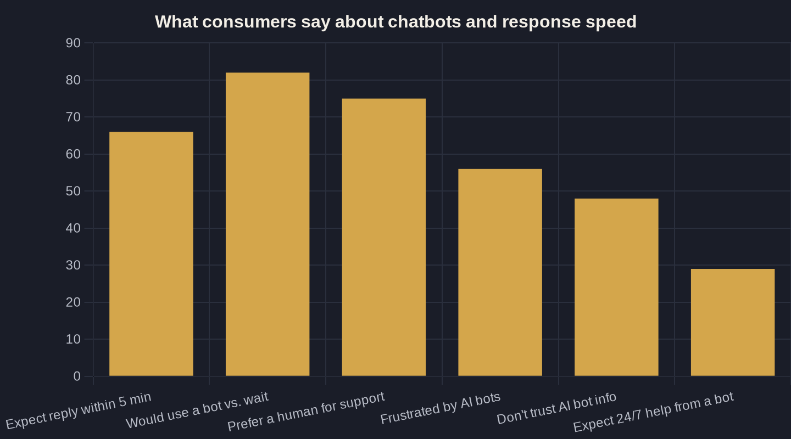

Should You Put an AI Chatbot on Your Service Website?
An AI chatbot can answer a lead in seconds — but most people still want a human. Here's the owner-to-owner math on when a website chatbot pays for itself, and when it just gets in the way.
Key takeaways
- Speed is the whole case: web leads contacted within an hour are nearly 7x more likely to reach a decision-maker, yet the average company takes 42 hours. A bot answers in seconds.
- Design it to greet, qualify, and book — then hand off to a human fast. 75% of people still prefer a real person, so keep a visible 'talk to a human' option at every step.
- A chatbot's real job for a service business is after-hours capture and routing high-intent visitors to the phone, where 37% of calls convert.
- Run the Owner's Math: if a bot books even one extra job a month, a $50-$200 tool pays for itself. If you can't see where the extra jobs come from, wait.
- Vendor stats like a 23% conversion lift are directional ceilings, not promises — test them against your own numbers, not the brochure.
What an AI chatbot for your website actually does
An AI chatbot for your website is a small chat window that greets visitors, answers a handful of common questions, and — set up correctly — books a call or appointment without a human lifting a finger. For a local service business, it is not a customer-service novelty. It is a way to catch the person who lands on your site at 9pm with a leaking water heater and would otherwise close the tab and dial the next plumber on the list.
The real question is not whether the technology is impressive. It is whether an AI chatbot for your website earns you more booked jobs than it costs in setup, oversight, and the occasional annoyed customer. This post pulls one decision out of our larger guide to AI Marketing and Automation for Local Service Businesses and runs the chatbot math, owner to owner — no hype, just what comes back for the dollar you put in.
Speed-to-lead is the whole case
The strongest argument for an AI chatbot for your website is speed. Harvard Business Review's audit of 2,241 U.S. companies found that firms contacting a web lead within an hour were nearly seven times more likely to have a qualifying conversation with a decision-maker than those who waited even sixty minutes longer. Yet in that same audit only 37% of companies responded within an hour, 23% never responded at all, and the average response time was a staggering 42 hours.
Customer patience has only tightened since. Today 66% of consumers expect a response within five minutes of reaching out to a business. No owner running jobs all day, phone buried in a tool bag, can hit a five-minute window by hand — least of all on a Saturday night. The cost of being slow isn't abstract: every hour you wait, the odds that lead even picks up when you finally call back fall off a cliff. A bot answers in seconds, every time, and a lead answered in seconds is one your competitor never gets to call.
The honest counterweight: people still want a human
Here is the part most chatbot pitches skip — and the reason candor is the product. In a Five9 survey of 4,000 U.S. and U.K. consumers, 75% said they prefer talking to a real human for support, 56% are often frustrated by AI customer-service chatbots, and 48% don't trust the information a bot gives them.
That is not a reason to skip the bot. It is a design spec. The bot's job is to greet, qualify, and book — then hand off to a person fast, with a visible "talk to a human" option at every step. A chatbot that traps a ready-to-buy customer in a scripted loop will cost you the exact high-intent lead you built it to catch. Used narrowly, it helps. Used to wall people off from a real conversation, it quietly bleeds money you will never see leave.
Where a chatbot earns its keep: after-hours and the phone
An AI chatbot for your website wins on two specific jobs: impatience and after-hours coverage. In Tidio's chatbot research, 82% of consumers said they would use a chatbot rather than wait for a human agent, and 29% said round-the-clock help is exactly what they expect a bot to deliver. Those are the moments a busy shop loses leads today — nights, weekends, and the visitor who won't sit on hold.
For a service business, though, the bot is not there to replace the call — it is there to win the after-hours visitor and route a high-intent prospect into a booked appointment. That distinction matters because the phone is still where the money is made: across an analysis of more than 60 million calls, 37% of phone leads from digital marketing convert during the call. Think about your own last emergency — you called the first business that responded, not the best one. So the bot should be a fast on-ramp to that call, not a detour around it. To cover the phone itself, pair the chatbot with an AI receptionist, and recover the people who hang up before booking with missed-call text-back.
| Approach | Typical first response | Covers nights & weekends? | Best at |
|---|---|---|---|
| Call back during business hours | Hours (42h average across firms) | No | Real rapport and closing |
| Web form + email auto-reply | Minutes to hours | Auto-reply only | Capturing contact info |
| Voicemail | Next business day | Records only | Letting people leave a number |
| AI website chatbot | Seconds | Yes, 24/7 | Greeting, qualifying, booking |
| Human + chatbot handoff | Seconds, then human | Yes | Speed plus the human touch |

Chatbot vs. how you handle web leads today
Most owners aren't choosing between a chatbot and a flawless front-desk team. They are choosing between a chatbot and how web leads actually get handled today — a form that fires an email you read three hours later, or a voicemail nobody checks until the morning truck rolls. Lined up honestly, the gap is hard to argue with.
The point of the comparison below isn't that the chatbot is "best" at everything — it clearly is not at building rapport or closing. It is that the chatbot fills the one slot every other channel leaves wide open: instant, around the clock, with no one on shift.
The Owner's Math: what a website chatbot is worth
Now the part that decides it — the Owner's Math, where we trace what a dollar actually returns. Start with the upside numbers, cited with eyes open. Conversational platform Glassix, analyzing its own client base across e-commerce, retail, SaaS, education, and small business, reported that AI chatbots drove a 23% lift in conversion rate and resolved issues 18% faster, handling 71% of inquiries without a human. Treat that as a directional ceiling, not a promise — it is the provider's own data on its own clients.
Run your own version instead. Say your site draws 200 visitors a month and 40 of them arrive after hours into a dead form:
- 40 after-hours visitors a month that currently hit nothing but an auto-reply.
- A bot that converts even 7-8% of them into a booked call.
- 3 extra appointments at a $500 average ticket = $1,500 a month in new revenue.
- Tool cost: typically $50 to $200 a month. Net: positive from the first job.
That is the entire test — not "is AI cool," but whether this line of Owner's Math comes out positive once you subtract the cost and your time. Even at one extra booked job, it has paid for itself. If you genuinely can't see where the extra booked jobs would come from, you are not ready to buy one yet.
Should you do it? A simple decision rule
So should you put an AI chatbot for your website live? Use a simple rule. Add one if you get real after-hours traffic, you have a clear "book a call" action for it to drive, and you will actually wire it to hand off to a human fast when the prospect wants one. Skip it — for now — if your site gets only a trickle of visitors, you already answer quickly during the day, or you'd be tempted to use it to hide from customers rather than serve them.
Whatever you decide on the bot, don't neglect the work that earns the review and the referral after a job is done well — that is what AI review management is for. The chatbot is one lever; the system around it is what compounds.
If you want a second set of eyes on whether a chatbot — or a receptionist, or text-back — is the right first move for your shop, that is exactly the kind of Owner's Math we run on a call. Book one, or grab the newsletter, where we take apart one of these decisions a week.
Sources
- Harvard Business Review — The Short Life of Online Sales Leads (Oldroyd, McElheran, Elkington) (2011)
- HubSpot — How Consumers Use Live Chat for Customer Service [New Data] (2025)
- Invoca — 5 Insights From Analyzing 60 Million Phone Conversations (2024)
- Five9 — New Study Finds 75% of Consumers Prefer Talking to a Human for Customer Service (2024)
- Tidio — The Future of Chatbots: Chatbot Statistics (2024)
- Glassix — Study Shows AI Chatbots Enhance Conversion by 23% and Resolve Issues 18% Faster (2024)
Want this run on your numbers?
Book a call and we will run the Owner's Math on your business — clear numbers, a straight plan, no pitch. Or read the free Playbook first.